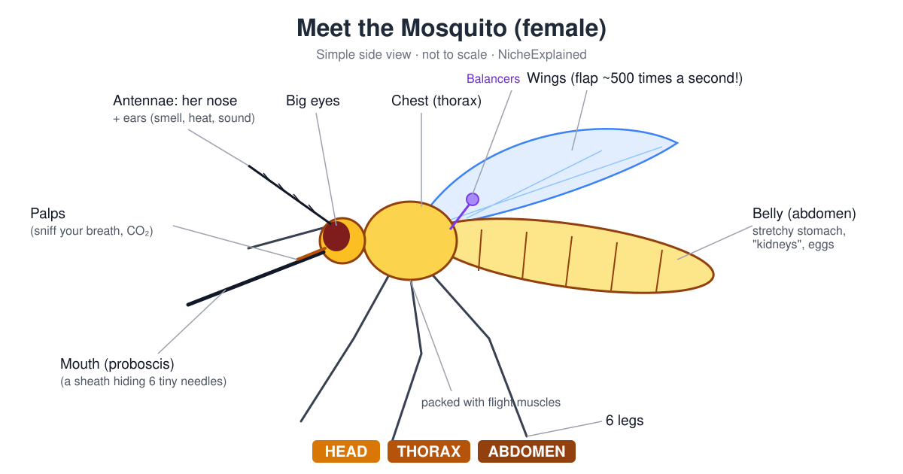
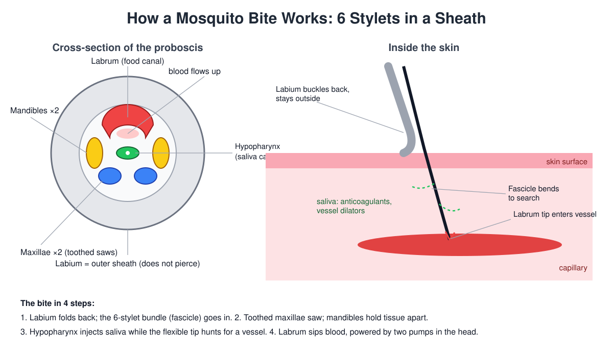

How a Mosquito Works: 6 Tiny Needles, a Breath Detector and Other Surprises
That itchy bite starts with six tiny needles. A fun, plain-English tour of a mosquito's body, how it finds you, how a bite works, and why only females bite.
You're drifting off to sleep. Then you hear it: that thin, whiny bzzzzz right next to your ear.
That tiny pest weighs less than a grain of rice. Yet it carries a breath detector, a sweat sniffer, built-in ears, two mini gyroscopes and a mouth made of six tiny needles. Honestly, it's a marvel of engineering. A very annoying one.
Let's take a mosquito apart (on paper) and see how each bit works.

Like every insect, a mosquito comes in three parts: a head for sensing and eating, a chest (thorax) for flying and walking, and a belly (abdomen) for digesting and making eggs.
The head: a flying smoke detector
Big eyes
Most of the head is two big bulging eyes. Each one is made of many tiny lenses, which makes them great at spotting movement. Did you know? Once a mosquito smells your breath, she starts paying extra attention to dark shapes nearby. That dark shape is often you.
Antennae: a nose and ears in one
Those feathery antennae are covered in tiny hairs that smell. They're tuned to the scents of your skin, like lactic acid from sweat. Fun fact: much of what she smells is made by the bacteria on your skin snacking on your sweat. Thanks, bacteria.
Up close, the antennae also pick up warmth and moisture rising from your skin. And they double as ears! A sensor at the base feels the antenna wiggle when sound hits it. Males have extra-bushy antennae and about twice as many hearing cells, because they're listening for the hum of females.
Palps: the breath detector
Next to the mouth are two short feelers called palps. They sniff out carbon dioxide, the gas you breathe out. Every exhale is basically a "dinner's here!" sign. Smelling CO₂ also makes her more sensitive to your other smells, like turning up the volume.
The mouth: six needles, not one
What looks like one needle is really a bundle of six tiny needles (scientists call them stylets), tucked inside a soft outer sleeve.

Here's the toolkit:
- The sleeve (labium): it never goes into your skin. It scrunches back like a pushed-up sleeve.
- Two saws (maxillae): needles with tiny teeth that cut through skin.
- Two holders (mandibles): they keep the hole open while the saws work.
- The straw (labrum): the biggest needle. Blood travels up it, and its tip can "smell" its way to a blood vessel.
- The spit tube (hypopharynx): it drips saliva in through its own little channel, so she can spit and sip at the same time.
How a bite actually works
- Land and push. The sleeve folds back and the needle bundle slides in.
- Saw. She wiggles her head to drive the saws in. The tip is bendy and fishes around under your skin for a blood vessel.
- Spit. Saliva goes in to stop your blood clotting and widen the vessel. That's why bites itch: your body is reacting to her spit. Sadly, that spit is also how diseases like dengue and malaria get passed on.
- Sip. Once the straw hits a vessel, two tiny pumps in her head suck the blood up. Like a milkshake, but much grosser.
The chest: the engine room
The chest is packed with flight muscles.
- Wings: mosquitoes flap ridiculously fast. Females beat their wings around 500 times a second, males around 800. That's the whine you hear. Did you know? Couples match their buzzing to "sing a duet" before mating.
- Balancers (halteres): instead of a second pair of wings, mosquitoes have two tiny knobbed stalks. They wobble during flight and work like a gyroscope to keep her steady. All true flies have them.
- Legs: six long, skinny legs for landing softly (which is how she sneaks onto you).
The belly: a stretchy fuel tank
The belly holds the stomach, the egg-making parts and some tiny tubes that work like kidneys. And it stretches. A lot. In under two minutes, a female can more than double her weight in blood. Imagine finishing lunch weighing twice as much as when you sat down.
Flying like that is risky, so she starts peeing out the extra water while she's still drinking. Those kidney-like tubes flush out much of the water and salt within a couple of hours, leaving the good stuff behind.
What's the good stuff for? Eggs. Blood is packed with protein, and she uses it to build a batch of eggs. Then she goes looking for water to lay them in.
Boys vs girls
| Female | Male | |
|---|---|---|
| Antennae | Lightly hairy | Big and bushy |
| Hearing | Good | Even better |
| Buzz | Lower pitch | Higher pitch |
| Food | Flower nectar and blood | Nectar and plant sugars only |
| Bites you? | Yes 😬 | Never |
Why only females bite
Both males and females live on sugary plant nectar for energy. But a female needs extra protein to make eggs, and blood is a rich, ready-made source. Males don't make eggs, so they skip the blood entirely.
So the next time one bites you, it's not personal. She's just eating for a whole batch of babies.
Quick FAQ
How many needles does a mosquito have? Six! Two saws, two holders, one straw and one spit tube, all inside a soft sleeve.
How do mosquitoes find me? From a distance they smell your breath and body odour. Up close they use their eyes and feel your warmth and moisture.
Why do mosquito bites itch? Your body is reacting to the mosquito's spit.
Why do they buzz? That's the sound of wings flapping hundreds of times a second.
Do mosquitoes have teeth? Not real teeth, but the two saw needles have tiny teeth on them.
Do male mosquitoes bite? No. They only drink nectar. The biters are all female.
Key takeaways
- Antennae smell and hear; palps detect your breath.
- The "needle" is six needles: two saw, two hold, one sips, one spits.
- Wings flap hundreds of times a second; tiny balancers keep her steady.
- Her belly stretches to hold more than her body weight in blood.
- Only females bite, to get protein for their eggs.
Sources
- NPR (2016), "Mosquitoes Use 6 Needles To Suck Your Blood" — https://www.npr.org/sections/health-shots/2016/06/07/480653821/watch-mosquitoes-use-6-needles-to-suck-your-blood
- NC State University, ENT 425 General Entomology, "Mouthparts" — https://genent.cals.ncsu.edu/bug-bytes/mouthparts/
- Kim et al. (2011), "Experimental analysis of the blood-sucking mechanism of female mosquitoes," Journal of Experimental Biology — https://journals.biologists.com/jeb/article/214/7/1163/33572/Experimental-analysis-of-the-blood-sucking
- "Determination of Mosquito Probing and Feeding Time…" (PMC, 2023) — https://pmc.ncbi.nlm.nih.gov/articles/PMC10751641/
- Raji et al. (2019), "Aedes aegypti Mosquitoes Detect Acidic Volatiles Found in Human Odor Using the IR8a Pathway," Current Biology — https://www.cell.com/current-biology/fulltext/S0960-9822%2819%2930215-5
- "Blood Meal Induced Regulation of Gene Expression in the Maxillary Palps…," Frontiers in Ecology and Evolution (2019) — https://www.frontiersin.org/journals/ecology-and-evolution/articles/10.3389/fevo.2019.00336/full
- "Carbon dioxide and blood-feeding shift visual cue tracking…" (PMC, 2022) — https://pmc.ncbi.nlm.nih.gov/articles/PMC9514554/
- "Diversity and complexity of auditory representation in the hearing systems of Aedes aegypti mosquitoes," Science Advances — https://www.science.org/doi/10.1126/sciadv.ads2689
- Pringle (1948), "The gyroscopic mechanism of the halteres of Diptera," Phil. Trans. R. Soc. B — https://royalsocietypublishing.org/rstb/article/233/602/347/112869/The-gyroscopic-mechanism-of-the-halteres-of
- Beyenbach (2012), "A dynamic paracellular pathway serves diuresis in mosquito Malpighian (renal) tubules" (PMC) — https://pmc.ncbi.nlm.nih.gov/articles/PMC3384693/
- Piermarini et al., "Malpighian Tubules as Novel Targets for Mosquito Control" (PMC) — https://pmc.ncbi.nlm.nih.gov/articles/PMC5334665/
- Barredo & DeGennaro (2020), "Not Just from Blood: Mosquito Nutrient Acquisition from Nectar Sources," Trends in Parasitology — https://www.cell.com/trends/parasitology/fulltext/S1471-4922(20)30040-4